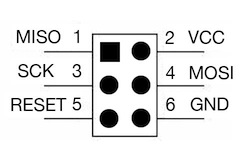
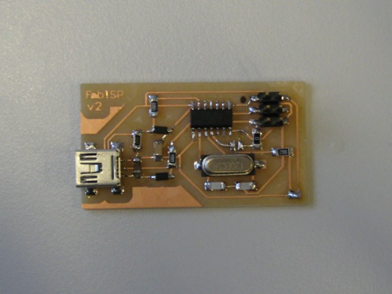

The FabISP is an in-system programmer for AVR microcontrollers, designed for production within a FabLab. That is, it allows you to program the microcontrollers on other boards you make, using nothing but a USB cable and 6-pin IDC to 6-pin IDC cable. It's based on the USBtiny and V-USB firmwares, which allow the ATtiny44 to perform USB communication in software. Programming can be done through avrdude. The schematic (PDF) is super simple: USB connector, ATtiny44, and 6-pin ISP header, with assorted passive components. I started with the Eagle files for the USBtinyISP, although there's almost nothing left of it. Most of the parts for the FabISP are in the FabLab inventory. Exceptions include the Mini-B USB connector (SparkFun, Digi-Key), 12 MHz crystal (Digi-Key), and 18 pF capacitors for the crystal (Digi-Key).
Eagle: fabisp.sch, fabisp.brd
Schematic: fabisp.pdf
PNGs: fabisp.png, fabispdim.png
Firmware: firmware.zip
The board connects to the computer using a Mini USB cable. It connects to the target (the board being programmed) with an 6-pin cable on the 2x3 ISP header.
The FabISP board contains two solder jumpers: pairs of adjacent pads with no components mounted on them. These can be closed (connected with solder) to configure the board. They are:
You probably want to mill the circuit board on the Modela, although you could try making a vinyl cut version or ordering a PCB. Check for shorts (i.e. things that shouldn't be connected but are) using the multimeter before soldering the components onto the board.
Start with the shorter components. If you haven't soldered before, it's probably good to practice with the smaller components (e.g. resistors and capacitors) before trying the microcontroller. The USB connector is probably the hardest, because the traces are so narrow. Do the ISP header at the end, so it doesn't get in the way when you're trying to solder other components. Most of the components can be oriented either way, with the exception of the microcontroller (the circle marking pin 1 should be in the lower left) and the zener diodes (the lines on the case should align with those in the Eagle board file).
An assembled version of the previous revision of the board. Pin 1 of the 6-pin header was marked with a black dot from a Sharpie.
Before using the FabISP, you need to program the ATtiny44 on it. To do this, you'll need another (programmed) FabISP, some other in-system programmer (like an AVRISP mkII) or serial cable and dasa (level convertor) board. Make sure SJ1 (the solder jumper near the microcontroller) is closed. Connect the 6 pin cable of the other programmer to your FabISP, being sure to orient it correctly (pin 1 to pin 1). You'll also need to provide power to your FabISP. You can do this by connecting it to your computer with a USB cable, or, if you're using another FabISP, by closing the SJ2 jumper on both boards.
Download the firmware.zip file above and unzip it. You'll also need to install the development tools for AVR microcontrollers. The easiest way to do this is with CrossPack on Mac OS X, WinAVR on Windows, and via the avr-gcc, avr-libc, and avrdude packages on Linux.
If you're not using another FabISP to program your FabISP, you'll need to edit the Makefile and modify the line AVRDUDE = avrdude -c usbtiny -p $(DEVICE) for your programmer. For example, to use an AVRISP mkII replace the -c usbtiny with -c avrispmkii -P usb (keeping the -p $(DEVICE)). For serial cable and dasa board, use -c dasa.
Once you've modified the Makefile, run make program from the command line to program the firmware onto the ATtiny44 on the FabISP.
Once the ATtiny44 is programmed, open the SJ1 solder jumper (disconnect the two pads).
If you connect the FabISP to your computer, it should appear as a USB device that can be seen in the Device Manager on Windows, in the System Profiler on Mac OS X, or in dmesg on Linux. (It will not generate a virtual com port or serial device.) On Mac OS X and Linux, the FabISP should work from avrdude without a driver. On Windows, you'll need the Windows USBtinyISP driver built with libusb v1.12 (usbtinyisp w32 driver v1.12.zip). On the 64-bit version of Windows, try these drivers instead. When you plug in the FabISP, point the Windows add hardware wizard at that folder. To use the FabISP from avrdude, supply usbtiny as the -c parameter. See the tutorial on programming microcontrollers for more information.
Please fill in this section based on your experiences.
Created by David A. Mellis
{kind=link}
{kind=link}